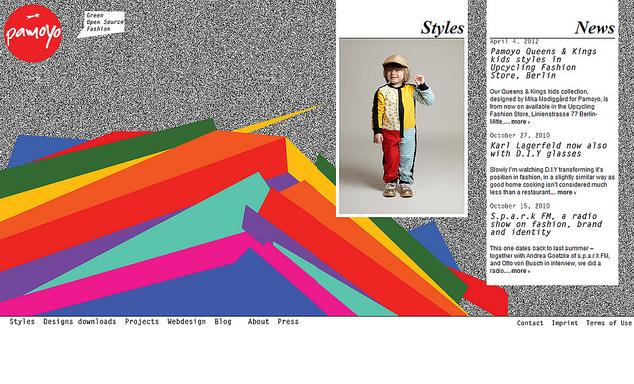
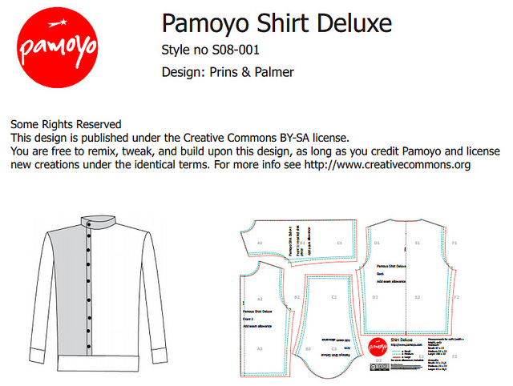

2013-06-28
決定穿上什麼衣服，也就決定了別人眼中的自己是何樣貌。
2008年，德國設計師Cecilia Palmer成立的時尚品牌Pamoyo引起眾多矚目。
這是第一個強調使用對生態友善的素材以及再生資源的綠色品牌，並且它秉持著開放資源的精神，公開服飾版型於網路上，有利於設計成品能融合在地不同文化特色，或是展現出自己的獨特風格。

透過這個品牌，讓設計不只是淺層表面意義的服裝樣式，而是深度傳達出社會公益與價值，及尊重環境、強調創意與公平之態度。
Cecilia Palmer認為，如果人們不互相模仿和複製，就不會帶動時尚潮流，時尚既然源起於自自由開放的文化，就更應該投入開放資源的運動。設計應加以傳播、分享，讓任何人可以參與合作和開發出更棒的想法，而不應該過度保護，像是許多衣服的商標變成名牌極力以法律遏止他人仿冒，獲取大量商業利益，也減少設計過程中的合作與創新。
為服裝設計創造出一個商業模式以外的開放資源選項是很重要的，因為這將挑戰一直以來的全球化分工模式，並且能利用開放的網路，讓非營利目的的相關團體和時尚服裝設計結盟，不像長久以來時尚雜誌靠廣告存活，也就需要配合廣告商展現一些非設計者想透露的價值。
當服裝設計的版型能在網站上找到並使用，就有利於設計師、藝術家、裁縫師、消費者等的自發性溝通交流。因此，本網站採取創用CC「姓名標示─相同方式分享」授權，使用者在標示著作者的情況下，可以下載版型設計圖使用和改造，並將成品用相同的授權方式再次分享。

圖/授權資訊Cecilia Palmer，姓名標示─相同方式分享。
除了開創Pamoyo品牌，Cecilia Palmer還舉辦「時尚重組(Fashion Reloaded)」的活動，這是一整天的工作坊，參與者將各自帶來舊有的衣物發揮自己手工DIY的潛力加以改造，同時將過程記錄下來，透過網路與他人分享。

這個活動不僅適合金融蕭條的時代、也符合益發重視環境生態的世界觀，參與者會透過此活動重新發現舊有衣物的價值，跳脫商業主流環境所重視的重新展現自己，久而久之，將減少購買大量製造、迅速過時、品質不佳的成衣，且會提升對衣物的品味、了解如何改造再生。
服裝設計展現的態度比起樣式更為重要，透過開放與分享，將使服裝與穿著者產生更緊密的關係，更能透過服裝來表達自己的品味和價值觀。
參考資料
http://futurezone.at/digitallife/12516-open-source-mode-recyclen-und-reparieren.php
http://fad.cat/congres/en/?p=700